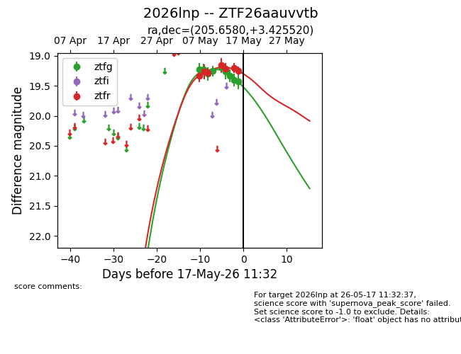
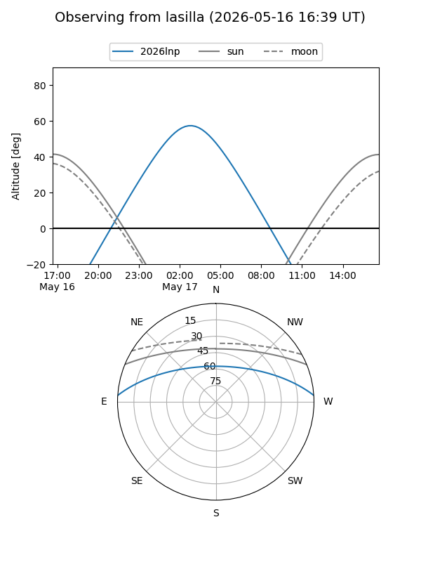
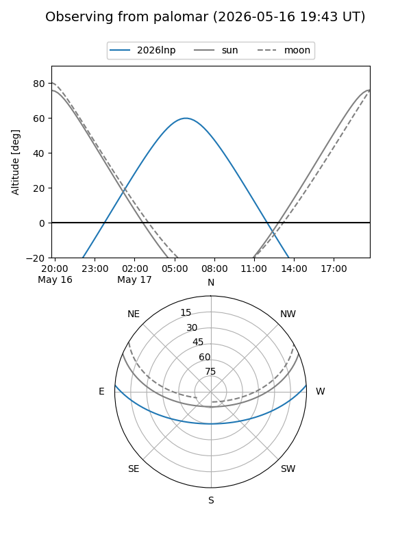
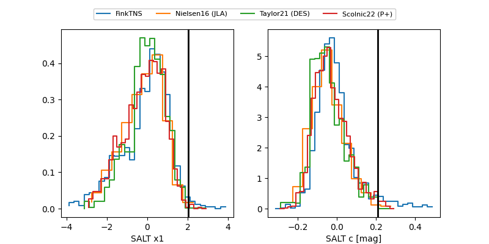

2026lnp
Target 2026lnp at 2026-05-17 11:35
Aliases and brokers:
FINK: link
Lasair: link
ALeRCE: link
TNS: link
YSE: link
alt names
ZTF26aauvvtb (ztf,fink_ztf)
2026lnp (tns,yse)
Coordinates:
equatorial (ra, dec) = 205.6580,+3.42552
equatorial (HMS+DMS) = 13:42:37.93,+03:25:31.87
galactic (l, b) = (332.4420,+63.32547)
Flags:
Photometry:
last ztfg=19.43, ztfr=19.25
9 ztfg, 7 ztfr detections
Lightcurve

Visibility


Additional plots
